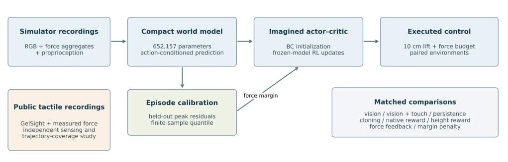
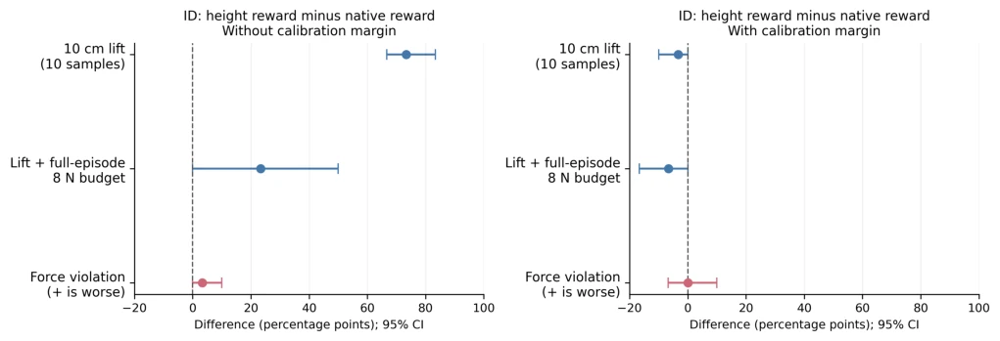

This paper resembles a sober "cold-water" study. The authors do not boast about the superiority of tactile sensing, but instead find that simple "state persistence" decisively outperforms complex vision-tactile world models on certain force prediction metrics. Although incorporating tactile sensing does reduce end-effector force error, direct force feedback still wins decisively at the control level. The most strikingly disappointing aspect is that the calibrated trajectory coverage does not match the actual execution success rate, and there is no real-robot validation. This reminds us not to focus solely on prediction error; decision quality is the ultimate criterion. Although the model is compact, the policy fails directly under OOD, and sim-to-real remains a blank area.
Existing works such as VT-WM [3] and FeelWorld [4] assume that fusing tactile sensing can improve manipulation, but overlook that reduced prediction error does not necessarily lead to policy optimization. Contact-rich manipulation couples perception, prediction, and control, but it is questionable whether tactile signals are truly effective in the chain from force prediction to trajectory-level reliability to execution control. Furthermore, while Conformal Prediction [7] and decision theory [8] provide calibration, task-specific residual handling still requires verification. This paper aims to distinguish between perceptual improvement and task reward improvement, and evaluate the practical limitations of force-constrained control, avoiding misjudging model accuracy as control capability.
The overall process is divided into two branches: perception and control. The perception branch trains a force regressor using GelSight data; the control branch is based on the MuJoCo Lift task, constructing a compact world model with 650,000 parameters. Inputs include RGB, aggregated tactile forces, and proprioception. The model adopts the TD-MPC2 module, randomly initialized, predicting end-effector force, peak force, etc. The key innovation lies in trajectory-level conformal calibration, rather than frame-level, to cover tail errors. Policy learning is conducted in a frozen model, using behavior cloning to initialize Actor-Critic, with the reward function including force budget penalties. Strategies are optimized through imagined rollouts, rather than online model updates. Calibrated allowable values are used for penalties rather than hard constraints, ensuring the evaluation of policy robustness and safety in simulated environments.

Fig. 1. Experimental design. The simulator branch uses contact-force aggregates; the public-data branch uses optical tactile images and supplies a separate sensing study. The actor learns inside a frozen world model, and its performance is measured by executing actions in MuJoCo.
Experiments are divided into two parts. The public data branch uses TacBench GelSight recordings to test force prediction; the CNN regressor achieves an MAE of 0.042N, but shape transfer is poor. The simulation branch uses 160 episodes of MuJoCo Lift to evaluate prediction error and execution control. Results show that although tactile sensing reduces prediction error (end-effector force drops from 1.058 to 0.228N), the persistence baseline is superior in some metrics. In control experiments, matched reward revision increased success rate from 20% to 93.3%, but success within force budget was only 33.3%, inferior to force feedback (70%). Although calibration reduces violations, it sacrifices task completion. Under OOD testing, the success rate of all policies is zero.

Fig. 2. Paired second-round ID changes from native to height reward. Intervals resample the ten shared ID environments while holding the three trained policies fixed. Better strict lifting does not imply better force regulation.